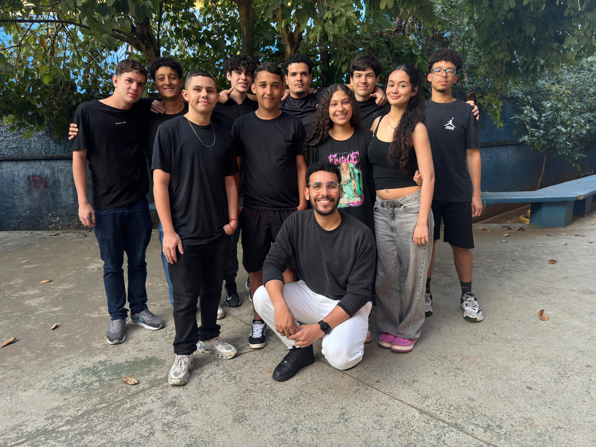

Sobre Nós
Movimentos 2.0 é uma plataforma inteligente de treino que ajuda você a registrar exercícios com facilidade, acompanhar sua evolução com gráficos precisos e se conectar com uma comunidade vibrante de atletas em busca de superação.
Nossa História
Nossa jornada começou em 2025. Não estávamos satisfeitos com os rastreadores de exercícios existentes no mercado, então decidimos construir uma plataforma mais completa que permitisse aos usuários interagir com seus amigos. Desde então, construímos a Movimentos graças à nossa incrível comunidade. Nossa missão é fornecer aos atletas de academia as ferramentas para que eles tenham mais sucesso em atingir seus objetivos de condicionamento físico. Ao contrário de outros apps de fitness, a Movimentos tem uma abordagem mais prática. Não dizemos aos atletas como se exercitar – isso é decisão deles. Simplesmente fornecemos as ferramentas para que eles tenham mais sucesso nos treinos.
Equipe

Patrícia Dias
Cofundora e CEO
Sou de São Paulo e atuo como CEO e cofundadora do Movimentos 2.0. Estou no mundo fitness há alguns anos, tendo trabalhado nos maiores aplicativos de fitness do mundo. Agora, estou construindo o Movimentos 2.0, um novo capítulo nessa jornada

Paulo Ricardo
Cofundor e CTO
Code Monkey e cofundador técnico do Movimentos 2.0. Construindo um rastreador de treino de alto nível para uma comunidade incrível de atletas.

Ismael Laurentino
Chefe de Desenvolvimento
Lidero a criação de soluções digitais focadas em treino, saúde e performance. Transformo dados e tecnologia em ferramentas práticas para quem busca evolução nos treinos, com uma plataforma eficiente, intuitiva e completa.

Samuel Brito
Desingner
Sou do Brasil. No Movimentos 2.0, atuo como Designer de Produto, garantindo que a experiência dos nossos usuários seja a melhor possível. Pessoalmente, sou entusiasta de academia e atividades ao ar livre.

Raul Lucena
Contente
Sou personal trainer e coach de treinamento de força certificado pelo Movimentos 2.0. Adoro transformar minha experiência prática como coach em artigos úteis e bem pesquisados para leitores do mundo todo.

Kauê Yuuki
Desenvolvedor
Sou um desenvolvedor master do Brasil. Gosto de levantar pesos para clarear a mente e desafiar meus limites. Estou animado para trabalhar em algo que ajude outras pessoas a aprimorarem suas jornadas fitness!

Pedro Pascon
Gerente de Conteúdo e Suporte
Sou brasileiro e gerente de conteúdo do Movimentos 2.0. Sou apaixonado por fitness há quase toda a minha vida; sou professor de fit dance e entusiasta de academia.

Filippi Denner
Gerente de Produto
Moro em São Paulo e sou apaixonado por criar e desenvolver produtos incríveis como o Movimentos 2.0! Meu foco é criar experiências excepcionais para nossos milhões de usuários. Também adoro ir à academia todas as manhãs para minha rotina PPL.

Maria Clara
Marketing
Sou uma criativa brasileira que adora malhar. Uso o Movimentos 2.0 em todos os treinos, o que me ajuda a manter a consistência, a me esforçar mais e a acompanhar meu progresso. Meu objetivo é que todos treinem usando o aplicativo Movimentos 2.0 e sintam seus benefícios.

João Pedro
Desenvolvedor
Sou do Brasil e sou desenvolvedor júnior na Movimentos 2.0. Sou apaixonado por usar minhas habilidades de programação e conhecimento fitness para ajudar a construir um dos melhores aplicativos de fitness disponíveis, e pratico varios esportes.

Eduardo Marques
Engenheiro de Software Sênior
Sou engenheiro de software brasileiro na Movimentos 2.0. Para mim, programação e levantamento de peso são sinônimo de melhoria contínua, e estou muito feliz em desenvolver um aplicativo que ajuda as pessoas em suas jornadas fitness.